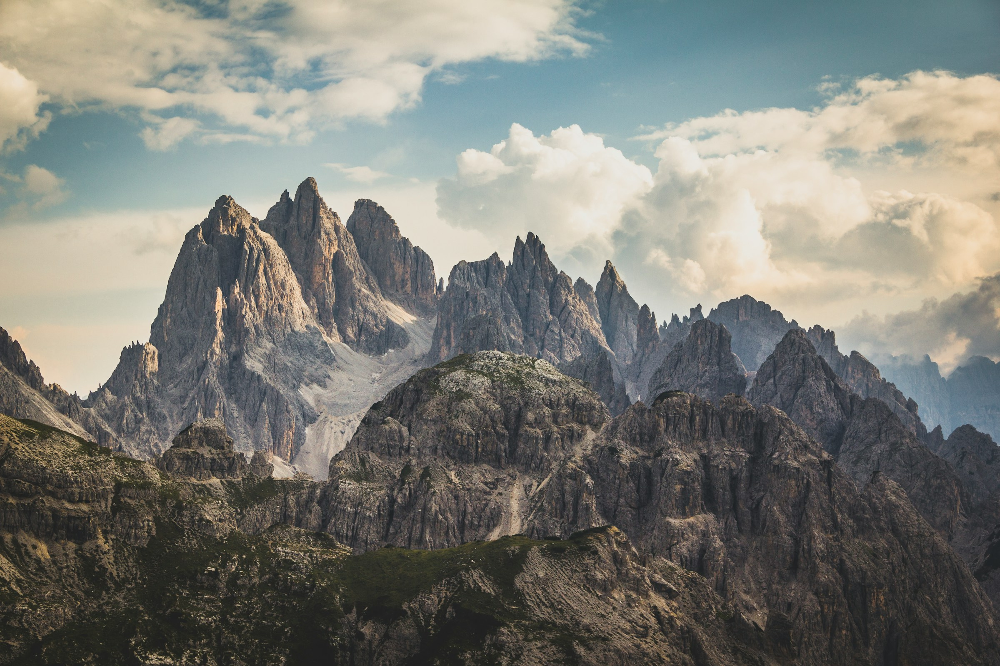
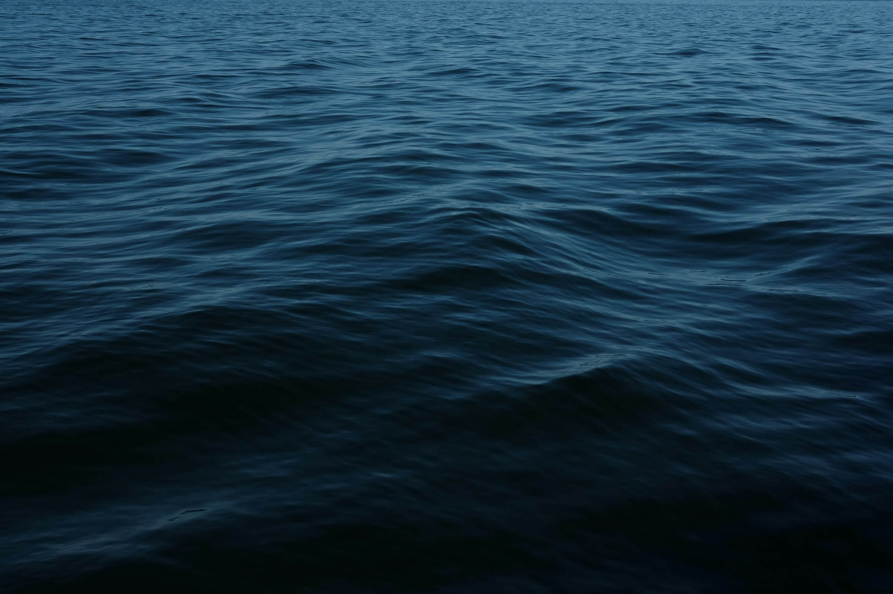
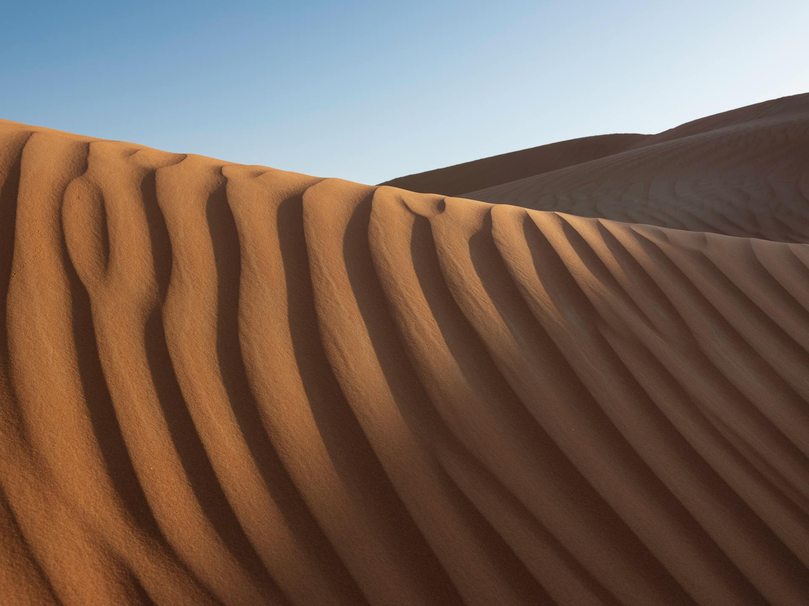
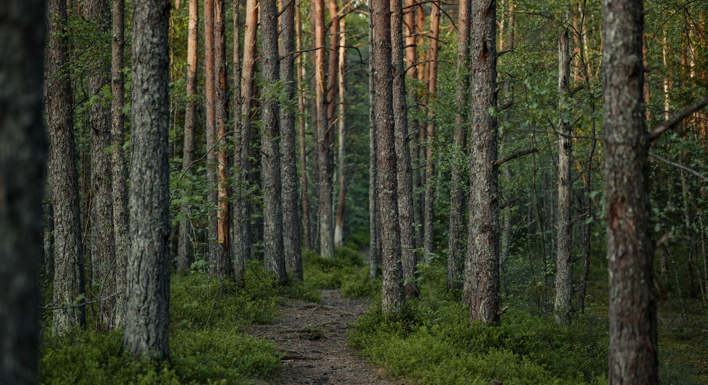
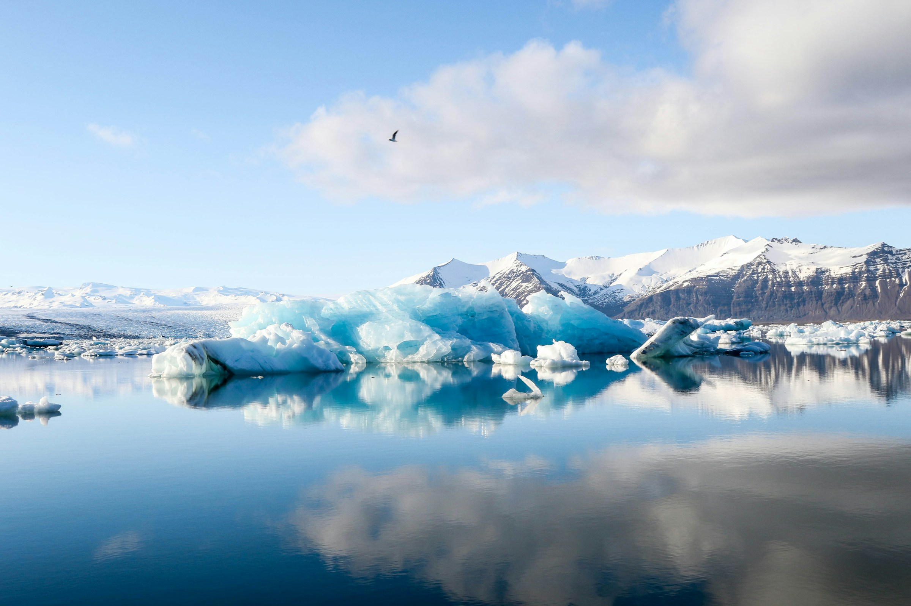

EXPERIENCES
Curated journeys across remote landscapes, designed for those who travel with intention.

MOUNTAINS
The most rewarding routes are rarely the easiest. Every ascent reveals new terrain and new perspectives.
From remote valleys to high-altitude passes, each journey is defined by movement, challenge, and discovery.

OCEAN
The ocean rewards patience as much as adventure. Every horizon invites a different journey.
From remote coastlines to open waters, each experience is shaped by rhythm, distance, and discovery.

DESERT
The desert reveals its secrets slowly. Every horizon shifts with the light, transforming familiar landscapes into something entirely new.
From endless dunes to hidden canyons, each journey is shaped by solitude, scale, and discovery.

FOREST
The forest invites a slower kind of exploration. Every path disappears into the landscape, revealing new details with every step.
From ancient woodlands to hidden waterways, each journey is shaped by curiosity, immersion, and discovery.

Glacier Expedition
Patagonia
Cross vast Patagonian glaciers alongside expert guides, discovering remote ice fields, dramatic landscapes and unforgettable alpine scenery.